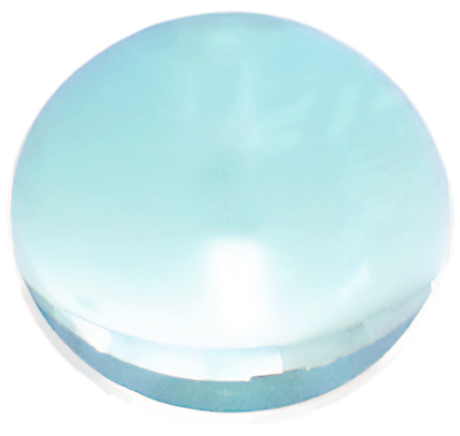

ABOUT
▶ 会社案内

●
社訓
VISION
品質
納期
価格
当社では、最新の設備や長年培ってきた技術を活かし、最高「品質」の実現を追求しております。
また、お客様に対しては「納期」を守り、満足頂ける「価格」で提供できるよう、常に努力しております。

●
会社概要
OUTLINE
- 名称
- ゼネラルオプティクス株式会社
- 代表者
- 代表取締役 島津 小夜
- 設立年月日
- 平成6年 (1994年) 3月16日
- 資本金
- 1千万円
- 従業員数
- 73名 (2025年4月1日時点)
- 所在地
-
本社・豊川工場 (Google Map)
〒014-0711
秋田県大仙市豊川字八丁堀69-2
電話: 0187-57-3322 / FAX: 0187-57-3325鐘見内工場 (製品・機械倉庫)
〒014-0205
秋田県大仙市望見内字野中247-5 - 業務内容
-
- 光学レンズ加工
党据加工、球面研磨加工、芯取加工、反射防止膜加工、異形芯取加工 (多角形)、接合加工、墨塗り加工 - 多層膜蒸着加工
UVカット、IRカット、UV-IRカット、偏光ビームスプリッター、無偏光ビームスプリッター、シフトレス (+IA D)、バンドパスフィルター、誘電体多層膜、アルミ地反射膜、低温蒸着、フォグランプ蒸着 - プラスチックトレー販売
- 光学レンズ加工
- 株主
- ゼネラル株式会社 (100%)
- 関連企業
-
ゼネラル株式会社
〒174-0043 東京都板橋区坂下1-25-20 ゼネラルビル2F
TEL: 03-3969-3731 FAX: 03-3969-3732有限会社ゼネスコ
〒014-0711 秋田県大仙市豊川字八丁堀69-2
TEL: 0187-57-3322 FAX: 0187-57-3325大通ゼネラル光学公司
- 主要取引銀行
- 秋田銀行 長野支店
北都銀行 角館支店 - 主要取引先
- ゼネラル株式会社
株式会社タムロン
京セラ株式会社
株式会社シグマ
株式会社オハラ
株式会社住田光学ガラス
エドモンドオプティクスジャパン株式会社
AGCマイクロガラス株式会社
株式会社ケンコートキナー
株式会社ビクセン
他 多数
HISTORY
- 19943月 ジェネラル・オプティクス株式会社 設立
- 19954月 光学薄膜製品の製造開始
- 19964月 光学素子の製造開始
- 19976月 技術研究所 設立
- 19981月 自動機械部門 設立
- 20015月 新工場完成
- 20036月 シリコン基板製品の製造開始
- 20043月 オプティクス製品の製造開始
- 20053月 ISO 14001 認証取得
- 20064月 新工場完成
- 20073月 新工場完成
- 20091月 ISO 9001 認証取得
- 20116月 シリコン基板製品の製造開始
- 201612月 新工場完成
- 201710月 シリコン基板製品の製造開始
- 20201月 新工場完成
- 202210月 ISO 14001 認証取得
- 202310月 ISO 14001 認証取得
- 20241月 宇宙光学素子の開発開始
ENVIRONMENTAL POLICY
当社は、地球環境の保全を企業の重要課題と捉え、事業活動のあらゆる側面で環境負荷の低減に取り組みます。
- 環境関連法規・その他要求事項の遵守
- 省資源・省エネルギー・廃棄物削減・リサイクル推進
- 環境に配慮した製品の設計・製造の推進
- 全社員の環境保全意識の向上
▶ お問い合わせ
CONTACT
各種製品のお問い合わせや
ご注文などお気軽にお問い合わせください。